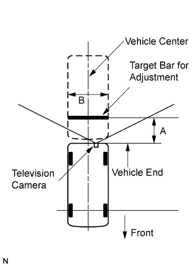
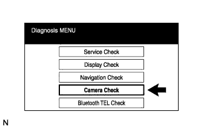
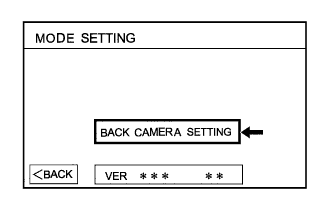
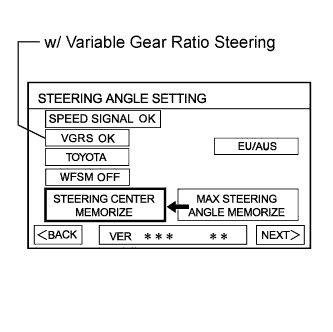
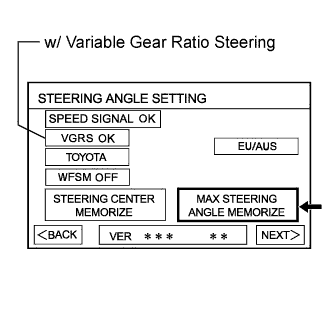
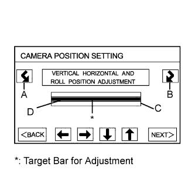
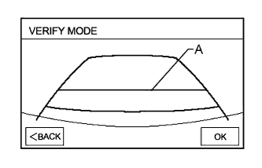

PARKING ASSIST MONITOR SYSTEM > CALIBRATION |
| ADJUST PARKING ASSIST MONITOR SYSTEM |
This parking assist monitor system can be set from the diagnostic screen of the "NAVIGATION SYSTEM".
If the following operations are performed, it is necessary to perform adjustments and checks on the diagnostic screen.
| Part Name | Operation | Adjustment Item |
| Rear television camera |
| Rear television camera optical axis (Camera position setting) |
| Parking assist ECU | Replace |
|
| PREPARATION FOR ADJUSTMENT |
 |
Park the vehicle with the steering wheel centered.
Set a target bar for adjustment.
| Area | Specification |
| A | 830 +/-5 mm (32.7 +/-0.194 in.) |
| B | 2000 +/-5 mm (78.7 +/-0.194 in.) |
| START DIAGNOSIS MODE |
Start the engine.
Start the diagnostic system (Click here).
 |
Select "Camera Check" on the "Diagnosis MENU" screen.
 |
Select "BACK CAMERA SETTING" on the "MODE SETTING" screen.
| SET STEERING ANGLE |
 |
Perform the STEERING CENTER MEMORIZE operation.
Check that the steering wheel is centered, and then press "STEERING CENTER MEMORIZE".
 |
Perform the MAX STEERING ANGLE MEMORIZE operation.
After adjusting the steering angle neutral point, turn the steering wheel to the left and right lock positions and press "MAX STEERING ANGLE MEMORIZE". The maximum steering angle is then stored.
w/ Variable Gear Ratio Steering (VGRS) system:
Perform the VGRS inspection.
Check that "VGRS OK" is displayed. If the VGRS is malfunctioning, "VGRS CHK" will be displayed, and pressing "NEXT" will not change the screen to the next display.
| SET CAMERA POSITION |
 |
Perform the roll angle adjustment.
Press switches A and B to rotate C so that it is parallel to the target adjustment bar D.
Perform the vertical and horizontal position adjustment.
Press the directional switches to move C so that the target adjustment bar D is centered in C.
| VERIFY MODE |
 |
Check that A and the target adjustment bar are overlapping.
Selecting "OK" will return the screen to the Diagnosis Menu, and complete the adjustment.